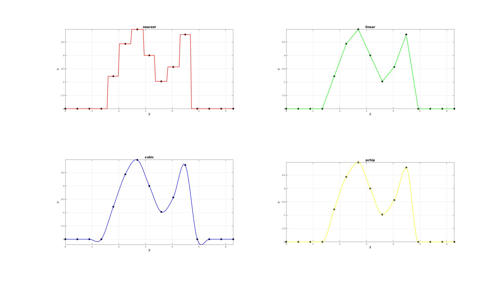
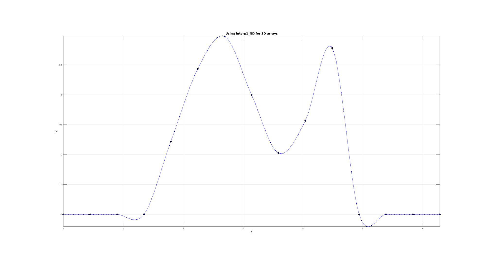

interp1_ND
Below is a demonstration of the features of the interp1_ND function
Contents
Syntax
[Yi]=interp1_ND(X,Y,Xi,interpDim,interpMethod);
Description
The interp1_ND function is similar to interp1. However it can perform 1D interpolation for multidimensional arrays. E.g. Time interpolation for 3D image data varying in time. The direction of interpolation is specified by interpDim, and the method by interpMethod ('nearest','linear','cubic','pchip').
Examples
clear; close all; clc;
PLOT SETTINGS
fontSize=15; markerSize=30; lineWidth=2;
Example: Using interp1_ND for 1D arrays (similar to interp1 function)
Creating a basic example curve
n=15; f=3; x=linspace(0,2*pi,n); y=sin(f*x); y(x>=1.5*pi)=-2; y(x<=0.5*pi)=-2;
Interpolate Using interp1_ND_ND
ni=n*10; xi=linspace(min(x(:)),max(x(:)),ni); interpDim=2; yi_1 = interp1_ND(x,y,xi,interpDim,'nearest'); yi_2 = interp1_ND(x,y,xi,interpDim,'linear'); yi_3 = interp1_ND(x,y,xi,interpDim,'cubic'); yi_4 = interp1_ND(x,y,xi,interpDim,'pchip');
cFigure; subplot(2,2,1); hold on; title('nearest','FontSize',fontSize); xlabel('X','FontSize',fontSize);ylabel('Y','FontSize',fontSize); plot(x,y,'k.','markerSize',markerSize); plot(xi,yi_1,'r-','lineWidth',lineWidth); axis tight; axis equal; box on; grid on; subplot(2,2,2); hold on; title('linear','FontSize',fontSize); xlabel('X','FontSize',fontSize);ylabel('Y','FontSize',fontSize); plot(x,y,'k.','markerSize',markerSize); plot(xi,yi_2,'g-','lineWidth',lineWidth); axis tight; axis equal; box on; grid on; subplot(2,2,3); hold on; title('cubic','FontSize',fontSize); xlabel('X','FontSize',fontSize);ylabel('Y','FontSize',fontSize); plot(x,y,'k.','markerSize',markerSize); plot(xi,yi_3,'b-','lineWidth',lineWidth); axis tight; axis equal; box on; grid on; subplot(2,2,4); hold on; title('pchip','FontSize',fontSize); xlabel('X','FontSize',fontSize);ylabel('Y','FontSize',fontSize); plot(x,y,'k.','markerSize',markerSize); plot(xi,yi_4,'y-','lineWidth',lineWidth); axis tight; axis equal; box on; grid on; drawnow;
Example: Using interp1_ND for 2D arrays
Creating a basic 2D array example set
siz1=10; xRange=linspace(0,2*pi,n); X=xRange(ones(1,siz1),:); Y=sin(f*X); Y(X>=1.5*pi)=-2; Y(X<=0.5*pi)=-2;
Interpolate using interp1_ND
xRange=linspace(0,2*pi,ni);
Xi=xRange(ones(1,size(X,1)),:);
interpMethod='cubic';
interpDim=2;
Yi = interp1_ND(X,Y,Xi,interpDim,interpMethod);
x=X(1,:); y=Y(1,:); xi=Xi(1,:); yi=Yi(1,:); cFigure; hold on; title('Using interp1_ND for 2D arrays','FontSize',fontSize,'Interpreter','none'); xlabel('X','FontSize',fontSize);ylabel('Y','FontSize',fontSize); plot(x,y,'k.','markerSize',markerSize); plot(xi,yi,'b.-','markerSize',markerSize/3); axis tight; axis equal; box on; grid on; drawnow;
Example: Using interp1_ND for 3D arrays
interpDim=1; siz=50*ones(1,3);%.*ones(1,nDim); siz(interpDim)=n; xRange=linspace(0,2*pi,n); switch interpDim case 1 [X,~,~]=ndgrid(xRange,1:siz(2),1:siz(3)); case 2 [~,X,~]=ndgrid(1:siz(1),xRange,1:siz(3)); case 3 [~,~,X]=ndgrid(1:siz(1),1:siz(2),xRange); end Y=sin(f*X); Y(X>=1.5*pi)=-2; Y(X<=0.5*pi)=-2;
Interpolate using interp1_ND
xRange=linspace(0,2*pi,ni); switch interpDim case 1 [Xi,~,~]=ndgrid(xRange,1:size(X,2),1:size(X,3)); case 2 [~,Xi,~]=ndgrid(1:size(X,1),xRange,1:size(X,3)); case 3 [~,~,Xi]=ndgrid(1:size(X,1),1:size(X,2),xRange); end interpMethod='cubic'; Yi = interp1_ND(X,Y,Xi,interpDim,interpMethod);
switch interpDim case 1 xi=squeeze(Xi(:,1,1)); yi=squeeze(Yi(:,1,1)); case 2 xi=squeeze(Xi(1,:,1)); yi=squeeze(Yi(1,:,1)); case 3 xi=squeeze(Xi(1,1,:)); yi=squeeze(Yi(1,1,:)); end cFigure; hold on; title('Using interp1_ND for 3D arrays','FontSize',fontSize,'Interpreter','none'); xlabel('X','FontSize',fontSize);ylabel('Y','FontSize',fontSize); plot(x,y,'k.','markerSize',markerSize); plot(xi,yi,'b.-','markerSize',markerSize/3); axis tight; axis equal; box on; grid on; drawnow;
The above generalizes for higher dimensions

GIBBON www.gibboncode.org
Kevin Mattheus Moerman, gibbon.toolbox@gmail.com
GIBBON footer text
License: https://github.com/gibbonCode/GIBBON/blob/master/LICENSE
GIBBON: The Geometry and Image-based Bioengineering add-On. A toolbox for image segmentation, image-based modeling, meshing, and finite element analysis.
Copyright (C) 2019 Kevin Mattheus Moerman
This program is free software: you can redistribute it and/or modify it under the terms of the GNU General Public License as published by the Free Software Foundation, either version 3 of the License, or (at your option) any later version.
This program is distributed in the hope that it will be useful, but WITHOUT ANY WARRANTY; without even the implied warranty of MERCHANTABILITY or FITNESS FOR A PARTICULAR PURPOSE. See the GNU General Public License for more details.
You should have received a copy of the GNU General Public License along with this program. If not, see http://www.gnu.org/licenses/.